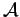

Inhalt Index DeskTop Bronstein

 Funktionalanalysis Maß und Lebesgue-Integral Meßbare Funktionen
Funktionalanalysis Maß und Lebesgue-Integral Meßbare Funktionen


Sei  eine  -Algebra von Teilmengen einer Menge
-Algebra von Teilmengen einer Menge  . Eine Funktion heißt meßbar, wenn für beliebiges die Menge in liegt.
. Eine Funktion heißt meßbar, wenn für beliebiges die Menge in liegt.
Eine komplexwertige Funktion heißt meßbar, wenn beide Funktionen g und h meßbar sind.
Ist die  -Algebra der LEBESGUE-meßbaren Mengen aus
-Algebra der LEBESGUE-meßbaren Mengen aus  und eine stetige Funktion, dann ist die Menge (s. Stetige Operatoren) für jedes
und eine stetige Funktion, dann ist die Menge (s. Stetige Operatoren) für jedes  offen und f damit meßbar.
offen und f damit meßbar.